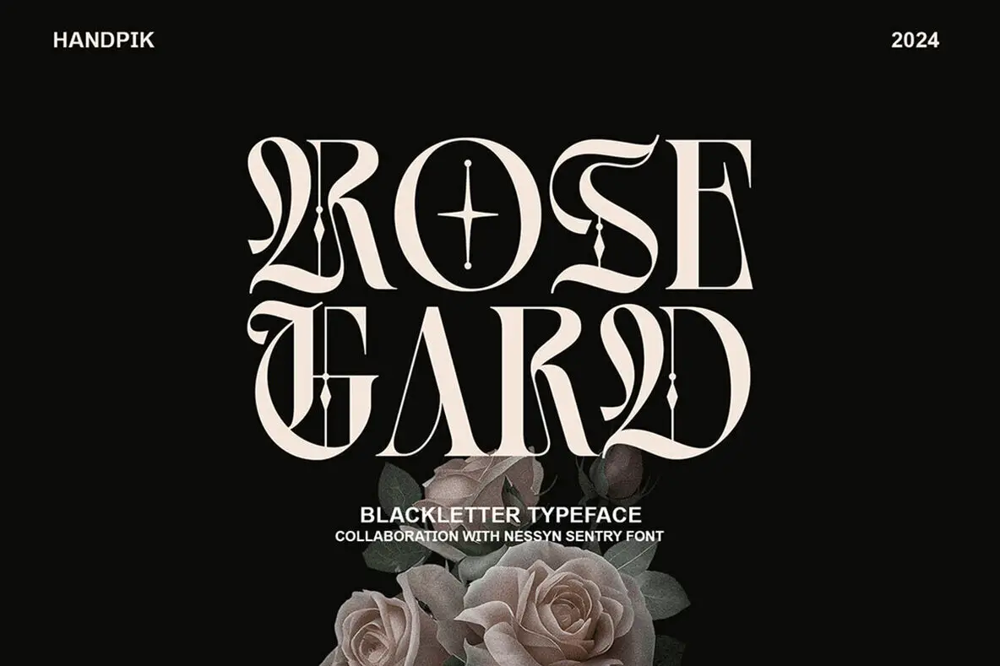

Editable specimen copy replaces the original foundry, font, and promotional wording. The composition follows the reference's scale, material, and image placement.
A two-line headline over a low floral engraving.

Editable specimen copy replaces the original foundry, font, and promotional wording. The composition follows the reference's scale, material, and image placement.